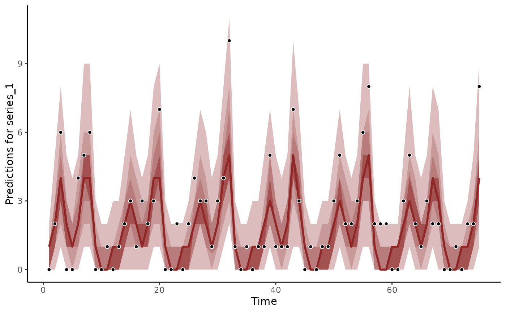
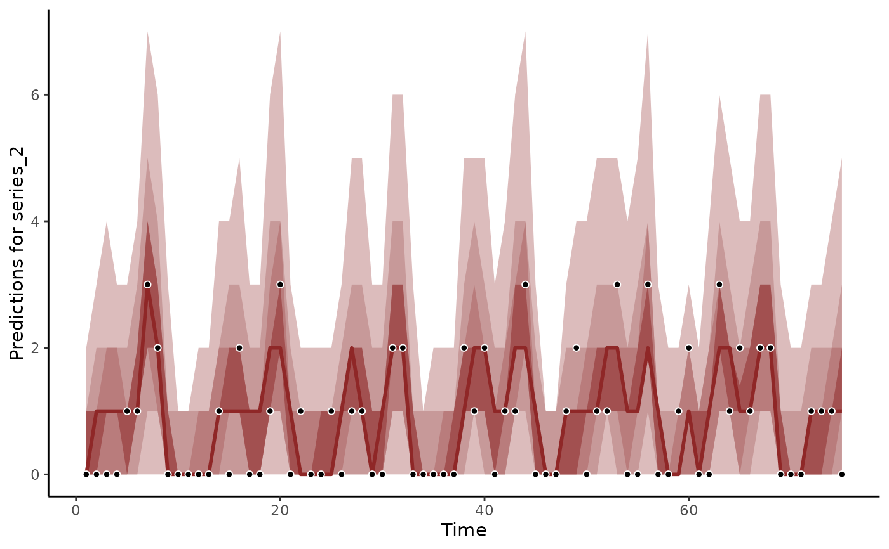
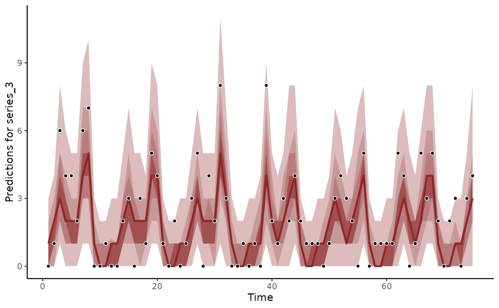
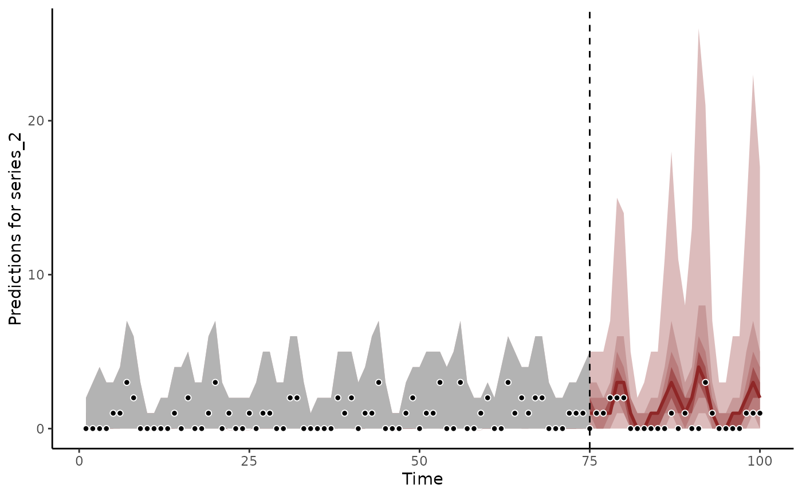
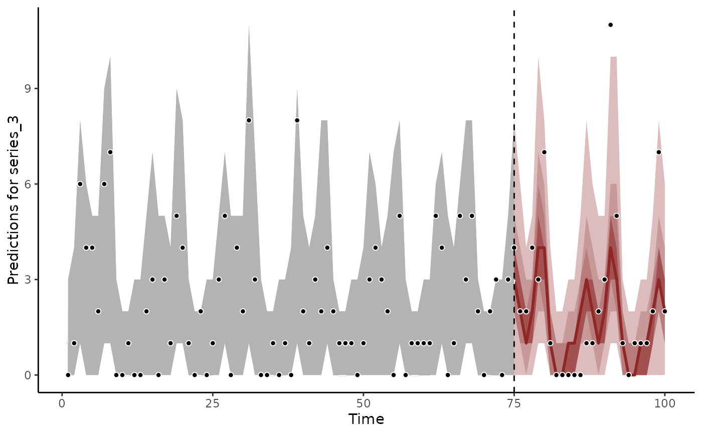
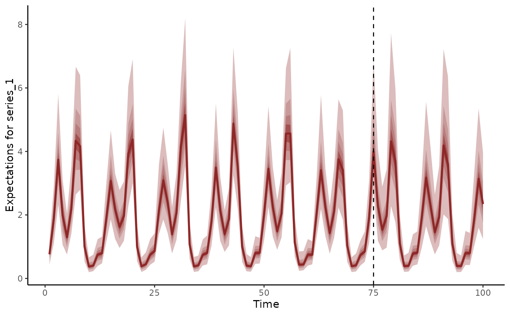
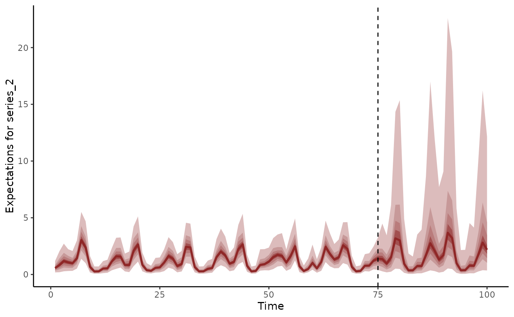
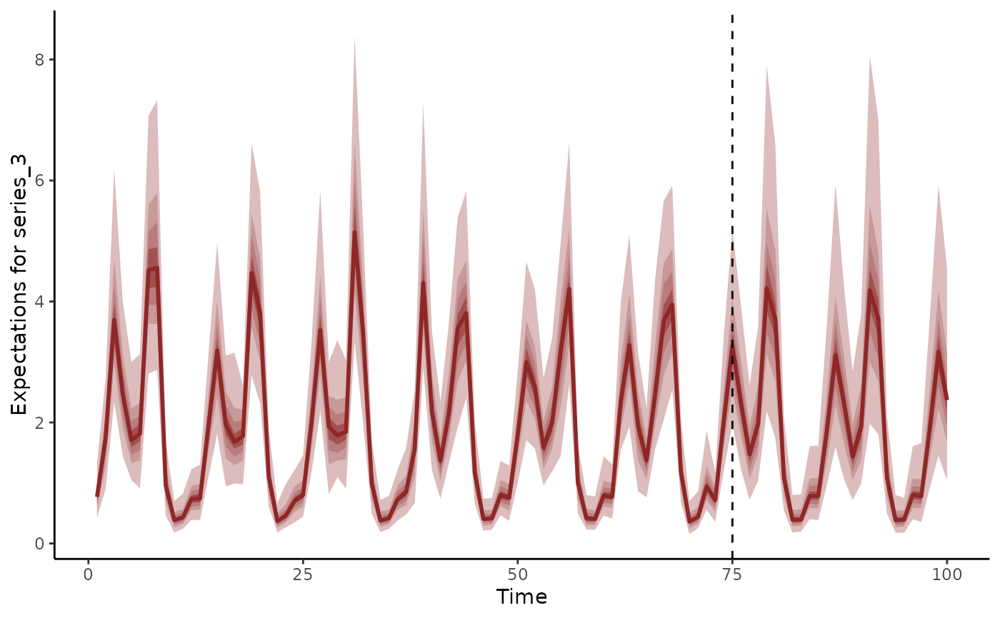
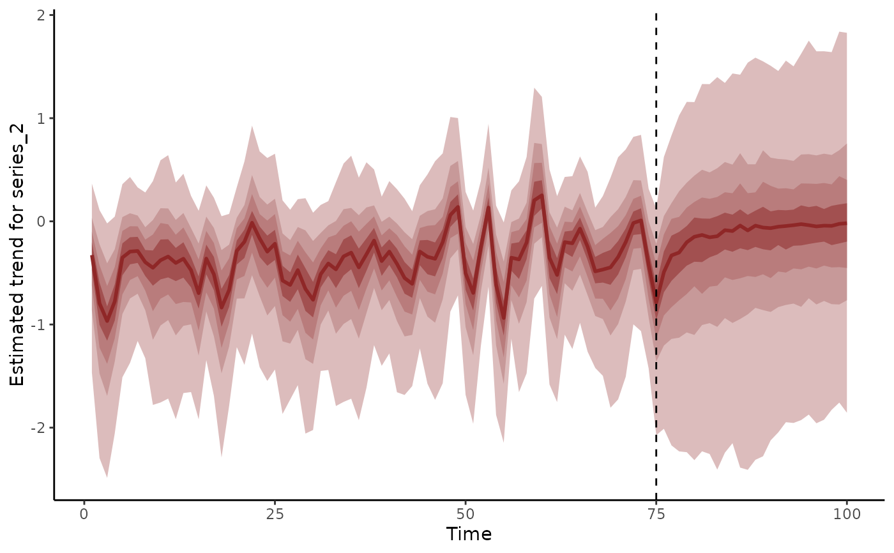
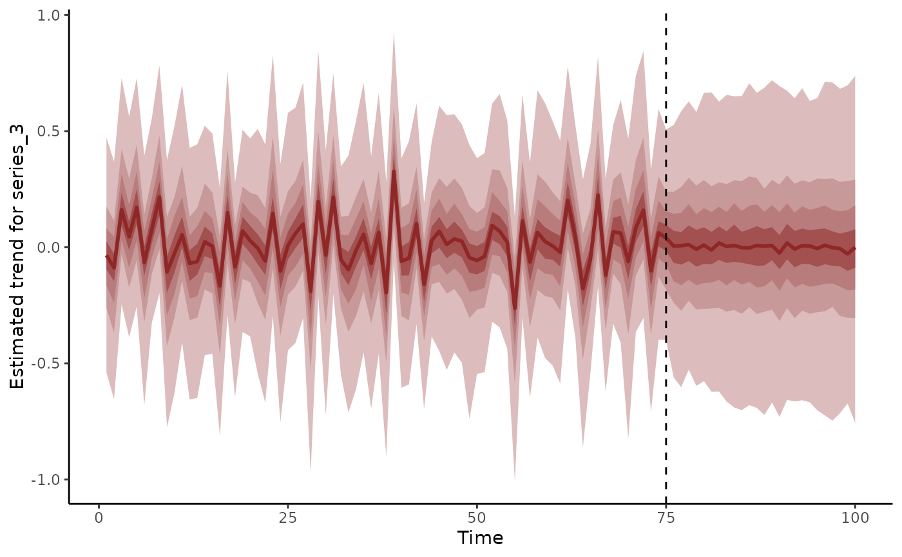

Plot posterior forecast predictions from mvgam models
Source:R/plot_mvgam_fc.R
plot_mvgam_forecasts.RdPlot posterior forecast predictions from mvgam models
Usage
plot_mvgam_fc(
object,
series = 1,
newdata,
data_test,
realisations = FALSE,
n_realisations = 15,
hide_xlabels = FALSE,
xlab,
ylab,
ylim,
n_cores = 1,
return_forecasts = FALSE,
return_score = FALSE,
...
)
# S3 method for mvgam_forecast
plot(
x,
series = 1,
realisations = FALSE,
n_realisations = 15,
xlab,
ylab,
ylim,
...
)Arguments
- object
listobject of classmvgam. Seemvgam()- series
integerspecifying which series in the set is to be plotted- newdata
Optional
dataframeorlistof test data containing at least 'series' and 'time' in addition to any other variables included in the linear predictor of the originalformula. If included, the covariate information innewdatawill be used to generate forecasts from the fitted model equations. If this samenewdatawas originally included in the call tomvgam, then forecasts have already been produced by the generative model and these will simply be extracted and plotted. However if nonewdatawas supplied to the original model call, an assumption is made that thenewdatasupplied here comes sequentially after the data supplied asdatain the original model (i.e. we assume there is no time gap between the last observation of series 1 indataand the first observation for series 1 innewdata). Ifnewdatacontains observations in columny, these observations will be used to compute a Discrete Rank Probability Score for the forecast distribution- data_test
Deprecated. Still works in place of
newdatabut users are recommended to usenewdatainstead for more seamless integration intoRworkflows- realisations
logical. IfTRUE, forecast realisations are shown as a spaghetti plot, making it easier to visualise the diversity of possible forecasts. IfFALSE, the default, empirical quantiles of the forecast distribution are shown- n_realisations
integerspecifying the number of posterior realisations to plot, ifrealisations = TRUE. Ignored otherwise- hide_xlabels
logical. IfTRUE, no xlabels are printed to allow the user to add custom labels usingaxisfrom baseR- xlab
label for x axis.
- ylab
label for y axis.
- ylim
Optional
vectorof y-axis limits (min, max)- n_cores
integerspecifying number of cores for generating forecasts in parallel- return_forecasts
logical. IfTRUE, the function will plot the forecast as well as returning the forecast object (as amatrixof dimensionn_samplesxhorizon)- return_score
logical. IfTRUEand out of sample test data is provided asnewdata, a probabilistic score will be calculated and returned. The score used will depend on the observation family from the fitted model. Discrete families (poisson,negative binomial,tweedie) use the Discrete Rank Probability Score. Other families use the Continuous Rank Probability Score. The value returned is thesumof all scores within the out of sample forecast horizon- ...
further
pargraphical parameters.- x
Object of class
mvgam_forecast
Value
A base R graphics plot (for plot_mvgam_fc) or a ggplot object (for plot.mvgam_forecast) and an optional list containing the forecast distribution
and the out of sample probabilistic forecast score
Details
plot_mvgam_fc generates posterior predictions from an object of class mvgam, calculates posterior
empirical quantiles and plots them against the observed data. If realisations = FALSE, the returned plot shows
90, 60, 40 and 20 percent posterior quantiles (as ribbons of increasingly darker shades or red)
as well as the posterior median (as a dark red line). If realisations = FALSE, a set of n_realisations posterior
draws are shown. This function produces an older style base R plot, as opposed to plot.mvgam_forecast
plot.mvgam_forecast takes an object of class mvgam_forecast, in which forecasts have already
been computed, and plots the resulting forecast distribution as a ggplot object. This function is therefore more
versatile and is recommended over the older and clunkier plot_mvgam_fc version
If realisations = FALSE, these posterior quantiles are plotted along
with the true observed data that was used to train the model. Otherwise, a spaghetti plot is returned
to show possible forecast paths.
Examples
# \donttest{
simdat <- sim_mvgam(n_series = 3, trend_model = AR())
mod <- mvgam(y ~ s(season, bs = 'cc', k = 6),
trend_model = AR(),
noncentred = TRUE,
data = simdat$data_train,
chains = 2,
silent = 2)
# Hindcasts on response scale
hc <- hindcast(mod)
str(hc)
#> List of 15
#> $ call :Class 'formula' language y ~ s(season, bs = "cc", k = 6)
#> .. ..- attr(*, ".Environment")=<environment: 0x56278e7f1560>
#> $ trend_call : NULL
#> $ family : chr "poisson"
#> $ trend_model :List of 7
#> ..$ trend_model: chr "AR1"
#> ..$ ma : logi FALSE
#> ..$ cor : logi FALSE
#> ..$ unit : chr "time"
#> ..$ gr : chr "NA"
#> ..$ subgr : chr "series"
#> ..$ label : language AR()
#> ..- attr(*, "class")= chr "mvgam_trend"
#> $ drift : logi FALSE
#> $ use_lv : logi FALSE
#> $ fit_engine : chr "stan"
#> $ type : chr "response"
#> $ series_names : chr [1:3] "series_1" "series_2" "series_3"
#> $ train_observations:List of 3
#> ..$ series_1: int [1:75] 4 3 0 0 0 0 0 3 1 0 ...
#> ..$ series_2: int [1:75] 5 1 0 0 0 0 0 0 2 3 ...
#> ..$ series_3: int [1:75] 1 2 1 0 1 0 0 0 0 2 ...
#> $ train_times : int [1:75] 1 2 3 4 5 6 7 8 9 10 ...
#> $ test_observations : NULL
#> $ test_times : NULL
#> $ hindcasts :List of 3
#> ..$ series_1: num [1:1000, 1:75] 3 1 6 1 2 3 4 2 6 6 ...
#> .. ..- attr(*, "dimnames")=List of 2
#> .. .. ..$ : NULL
#> .. .. ..$ : chr [1:75] "ypred[1,1]" "ypred[2,1]" "ypred[3,1]" "ypred[4,1]" ...
#> ..$ series_2: num [1:1000, 1:75] 2 4 0 3 3 3 3 0 1 2 ...
#> .. ..- attr(*, "dimnames")=List of 2
#> .. .. ..$ : NULL
#> .. .. ..$ : chr [1:75] "ypred[1,2]" "ypred[2,2]" "ypred[3,2]" "ypred[4,2]" ...
#> ..$ series_3: num [1:1000, 1:75] 1 5 1 4 1 3 5 1 0 3 ...
#> .. ..- attr(*, "dimnames")=List of 2
#> .. .. ..$ : NULL
#> .. .. ..$ : chr [1:75] "ypred[1,3]" "ypred[2,3]" "ypred[3,3]" "ypred[4,3]" ...
#> $ forecasts : NULL
#> - attr(*, "class")= chr "mvgam_forecast"
plot(hc, series = 1)
#> No non-missing values in test_observations; cannot calculate forecast score

plot(hc, series = 2)
#> No non-missing values in test_observations; cannot calculate forecast score

plot(hc, series = 3)
#> No non-missing values in test_observations; cannot calculate forecast score

# Forecasts on response scale
fc <- forecast(mod, newdata = simdat$data_test)
str(fc)
#> List of 16
#> $ call :Class 'formula' language y ~ s(season, bs = "cc", k = 6)
#> .. ..- attr(*, ".Environment")=<environment: 0x56278e7f1560>
#> $ trend_call : NULL
#> $ family : chr "poisson"
#> $ family_pars : NULL
#> $ trend_model :List of 7
#> ..$ trend_model: chr "AR1"
#> ..$ ma : logi FALSE
#> ..$ cor : logi FALSE
#> ..$ unit : chr "time"
#> ..$ gr : chr "NA"
#> ..$ subgr : chr "series"
#> ..$ label : language AR()
#> ..- attr(*, "class")= chr "mvgam_trend"
#> $ drift : logi FALSE
#> $ use_lv : logi FALSE
#> $ fit_engine : chr "stan"
#> $ type : chr "response"
#> $ series_names : Factor w/ 3 levels "series_1","series_2",..: 1 2 3
#> $ train_observations:List of 3
#> ..$ series_1: int [1:75] 4 3 0 0 0 0 0 3 1 0 ...
#> ..$ series_2: int [1:75] 5 1 0 0 0 0 0 0 2 3 ...
#> ..$ series_3: int [1:75] 1 2 1 0 1 0 0 0 0 2 ...
#> $ train_times : int [1:75] 1 2 3 4 5 6 7 8 9 10 ...
#> $ test_observations :List of 3
#> ..$ series_1: int [1:25] 0 1 0 0 4 3 1 1 6 8 ...
#> ..$ series_2: int [1:25] 0 0 0 0 0 4 0 1 3 2 ...
#> ..$ series_3: int [1:25] 0 0 0 0 0 0 0 1 1 3 ...
#> $ test_times : int [1:25] 76 77 78 79 80 81 82 83 84 85 ...
#> $ hindcasts :List of 3
#> ..$ series_1: num [1:1000, 1:75] 3 1 6 1 2 3 4 2 6 6 ...
#> .. ..- attr(*, "dimnames")=List of 2
#> .. .. ..$ : NULL
#> .. .. ..$ : chr [1:75] "ypred[1,1]" "ypred[2,1]" "ypred[3,1]" "ypred[4,1]" ...
#> ..$ series_2: num [1:1000, 1:75] 2 4 0 3 3 3 3 0 1 2 ...
#> .. ..- attr(*, "dimnames")=List of 2
#> .. .. ..$ : NULL
#> .. .. ..$ : chr [1:75] "ypred[1,2]" "ypred[2,2]" "ypred[3,2]" "ypred[4,2]" ...
#> ..$ series_3: num [1:1000, 1:75] 1 5 1 4 1 3 5 1 0 3 ...
#> .. ..- attr(*, "dimnames")=List of 2
#> .. .. ..$ : NULL
#> .. .. ..$ : chr [1:75] "ypred[1,3]" "ypred[2,3]" "ypred[3,3]" "ypred[4,3]" ...
#> $ forecasts :List of 3
#> ..$ series_1: int [1:1000, 1:25] 0 2 0 0 1 0 1 1 1 1 ...
#> ..$ series_2: int [1:1000, 1:25] 0 0 2 0 2 2 2 0 0 2 ...
#> ..$ series_3: int [1:1000, 1:25] 0 0 0 1 0 2 0 0 0 0 ...
#> - attr(*, "class")= chr "mvgam_forecast"
plot(fc, series = 1)
#> Out of sample DRPS:
#> 36.739542
plot(fc, series = 2)
#> Out of sample DRPS:
#> 12.462298

plot(fc, series = 3)
#> Out of sample DRPS:
#> 9.974369

# Forecasts as expectations
fc <- forecast(mod, newdata = simdat$data_test, type = 'expected')
plot(fc, series = 1)

plot(fc, series = 2)

plot(fc, series = 3)

# Dynamic trend extrapolations
fc <- forecast(mod, newdata = simdat$data_test, type = 'trend')
plot(fc, series = 1)
plot(fc, series = 2)

plot(fc, series = 3)

# }